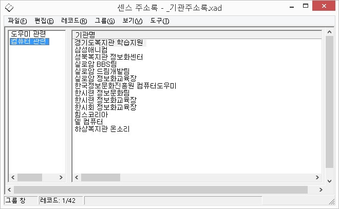

디자인 창은 자료를 입력하기 위한 기본 틀을 만들거나 수정할 때 사용됩니다.
즉, 디자인 창에서는 사용할 필드의 이름, 형태, 크기, 필드의 순서 등을 사용자가 원하는 대로 지정할 수 있습니다.
디자인 창에서 사용할 수 있는 기능은 크게 다음의 4가지입니다.
1. 추가: 마지막 필드 다음에 새로운 필드를 추가합니다.
① '필드 이름' 편집창에 필드 이름을 적습니다.
② '필드 형식' 콤보박스에서 원하는 필드 형태를 고릅니다. 기본은 문자열입니다.
③ '필드 크기' 편집창에 이 필드에 들어갈 데이터의 최대 크기를 바이트 단위로 적습니다. 이때 우편번호, 날짜, 숫자 등의 형식은 임의로 크기를 변경할 수 없습니다.
④ '추가' 버튼을 눌러 필드를 추가합니다.
2. 삽입: 현재 필드 위치에 새로운 필드를 삽입합니다.
① 목록에서 삽입할 위치를 선택합니다.
② 필드의 이름, 형식, 크기를 정합니다.
③ '삽입' 버튼을 누릅니다.
3. 변경: 등록된 필드의 속성을 변경합니다.
① 목록에서 변경을 원하는 필드를 선택합니다.
② 필드의 이름, 형식, 크기를 변경합니다.
③ '변경' 버튼을 누릅니다.
4. 삭제: 등록된 필드를 삭제합니다.
① 목록에서 삭제를 원하는 필드를 선택합니다.
② '삭제' 버튼을 누르거나 <Del>키를 누릅니다.
* 필드 형식은 입력될 데이터의 타입을 말하는 것으로 센스 주소록에서는 다음과 같은 형식을 지원합니다.
① 문자열: 일반적인 문자들로 이루어진 필드를 뜻하며 주로 이름이나 직책 등의 데이터에 사용됩니다.
② 전화: 전화번호를 입력할 때 사용하며, 전화걸기 기능에서 활용되는 필드입니다.
③ 이메일: 이메일을 입력할 때 사용하며, 이메일 보내기 기능에서 활용됩니다.
④ 주소: 주소를 입력할 때 사용합니다.
⑤ 우편번호: 우편번호를 입력할 때 사용합니다.
⑥ 날짜: 날짜를 입력할 때 사용합니다.
⑦ 숫자: 계산이 필요할 때 사용합니다. 자동계산 기능을 통해 합계와 평균을 구할 수 있습니다.
* 디자인 작업을 마치려면 [편집] 메뉴의 [편집 종료] 메뉴를 사용합니다. 그러면 디자인에 맞추어 데이터를 입력할 수 있도록 데이터 편집 작업으로 자동 전환됩니다.
기본 창은 입력되어 있는 데이터를 살펴볼 때 사용되는 창입니다.
화면 상단에 각 필드들의 이름이 표시되며, 그 아래로 데이터들이 필드 이름에 맞추어 도표 형식으로 보여집니다.
기본 창은 주로 데이터를 살펴보기 위해 사용되지만 간단히 필드 데이터의 수정도 가능합니다.
다음은 기본 창에서 사용되는 키와 기능에 대한 설명입니다.
1. 데이터 읽기: 다음의 키들을 사용하여 레코드에 들어 있는 내용을 확인할 수 있습니다.
① Home, End: 현재 필드의 처음과 마지막 글자를 읽습니다.
② 좌, 우 화살표: 현재 필드의 이전, 다음 글자를 읽습니다.
③ Ctrl-좌, Ctrl-우 화살표: 현재 필드의 이전, 다음 단어를 읽습니다.
④ Ctrl-K: 현재 필드 전체 내용을 읽어줍니다.
⑤ Ctrl-L: 현재 레코드 전체 내용을 읽어줍니다.
2. 레코드 및 필드 단위 이동
① Shift-Tab, Tab: 현재 레코드의 이전, 다음 필드로 이동합니다.
② Ctrl-Shift-Tab, Ctrl-Tab: 현재 레코드의 처음, 마지막 필드로 이동합니다.
③ 위, 아래 화살표: 이전, 다음 레코드로 이동합니다.
④ Page Up, Page Down: 이전, 다음 화면의 레코드로 이동합니다.
*레코드 단위 이동시 레코드가 선택되어 있으면 선택 여부를 알려줍니다.
3. 레코드 선택 및 해제
한 개의 레코드가 아닌 여러 개의 레코드를 대상으로 작업해야 하는 경우, <Space>키를 눌러 레코드를 선택한 후 필요한 작업(삭제, 메일 등)을 실행합니다.
선택된 레코드에서 <Space>키를 누르면 선택이 해제됩니다.
4. 필드 데이터 수정
데이터 편집 창을 사용하지 않고서도 다음의 방법을 사용하여 간단히 데이터를 수정할 수 있습니다.
① 이동기능을 사용해 수정을 원하는 데이터를 찾습니다.
② <Enter>키를 누르면 편집창에 현재의 데이터가 표시되며 편집이 가능하게 됩니다.
③ 수정된 내용을 적용하려면 <Enter>키를, 취소하려면 <Escape>키를 누릅니다.
데이터 편집 창은 레코드를 삽입, 추가하거나 기존의 레코드를 편집할 때 사용되는 창입니다.
다음의 키들을 사용하여 레코드 및 필드를 이동하며 편집 작업을 수행합니다.
마지막 레코드에서 다음으로 이동하면 새로운 빈 레코드가 추가됩니다.
④ <Ctrl-Home, End>: 처음 레코드와 마지막 레코드로 이동합니다. 데이터를 새롭게 추가하거나 수정하는 경우 데이터 형식에 따라 다음의 규칙이 적용됩니다.
1. 문자열: 숫자, 영문, 한글, 기호 등 입력할 수 있는 모든 문자가 가능합니다.
2. 전화: 전화번호에 해당하는 숫자를 입력합니다. 숫자 사이에 기호를 입력할 수도 있으나 컴마(,)가 입력된 후의 숫자는 또 다른 전화번호로 인식합니다.
3. 이메일: 이메일을 입력합니다.
4. 주소: 주소를 입력합니다.
5. 우편번호: 우편번호에 해당하는 숫자를 입력합니다. 대쉬(-) 기호를 입력하지 않으면 필드에서 포커스가 사라질 때 자동으로 우편번호 중간에 삽입합니다.
6. 날짜: 년, 월, 일 순으로 입력합니다. "0000년 00월 00일", "0000-00-00", "0000 00 00" 등의 어느 형식을 사용해도 무방하나 반드시 년, 월, 일을 구분기호(스페이스 포함)로 구분해 주어야 합니다. 입력 이후에 모두 "0000-00-00"의 형식으로 전환됩니다.
7. 숫자: 소숫점이 아닌 정수만을 입력합니다. 음, 양을 나타내기 위한 "+", "-" 이외의 기호는 입력할 수 없습니다.
* 모든 편집이 끝나면 [편집] 메뉴의 [편집 종료] 메뉴를 사용하여 편집 작업을 종료합니다.
그룹 창은 그룹을 대상으로 작업할 때 사용됩니다.

화면 좌측에 그룹을 표시하는 목록이 있고 우측에 레코드를 표시하는 목록이 있습니다. 좌측 목록에서 그룹을 선택하면 우측의 목록에 그 그룹에 속한 레코드들이 표시됩니다. 그룹 목록과 레코드 목록을 전환하려면 <Shift-Tab>, <Tab>키를 사용합니다.
다음은 그룹창에서 사용할 수 있는 기능키입니다.
Del: 그룹 목록에서는 "그룹 삭제" 기능이, 레코드 목록에서는 "그룹에서 레코드 삭제" 기능이
실행됩니다.
F2: 그룹 목록에서 "그룹 이름 변경" 기능이 실행됩니다.
Home: 현재 항목의 첫 번째 글자를 읽습니다.
End: 현재 항목의 마지막 글자를 읽습니다.
왼쪽 화살표: 현재 항목의 이전 글자를 읽습니다.
오른쪽 화살표: 현재 항목의 다음 글자를 읽습니다.
Ctrl-왼쪽 화살표: 현재 항목의 이전 단어를 읽습니다.
Ctrl-오른쪽 화살표: 현재 항목의 다음 단어를 읽습니다.